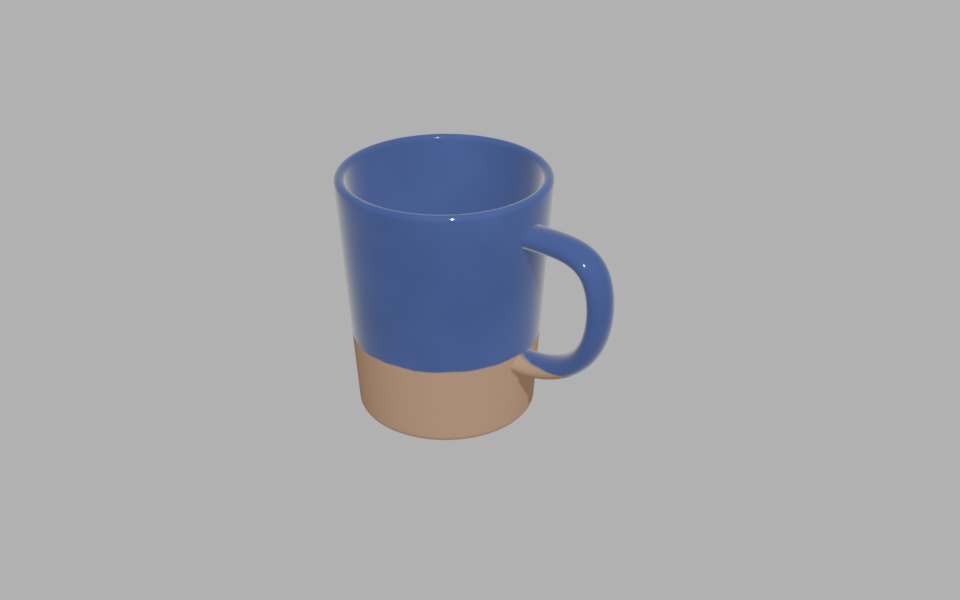
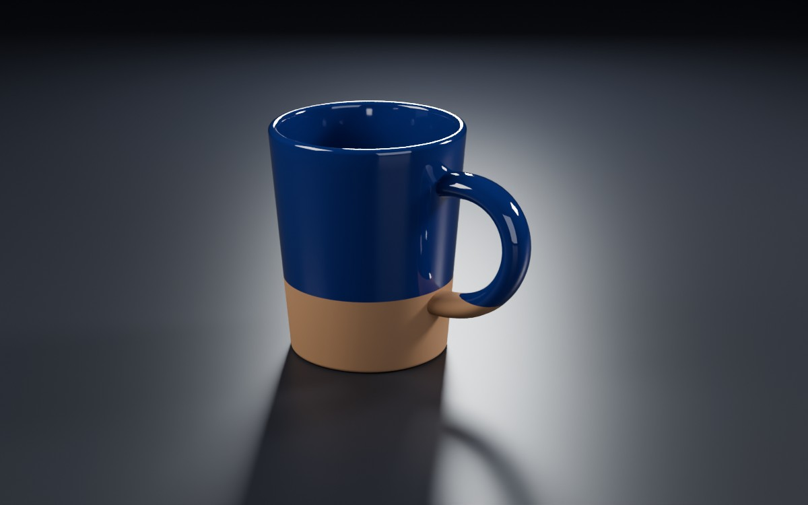
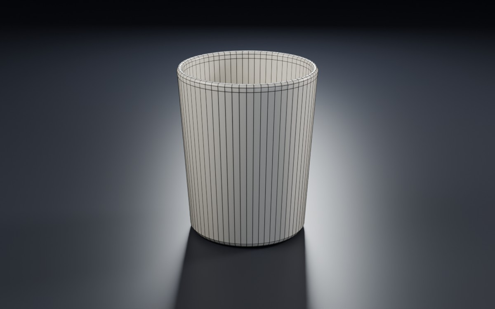
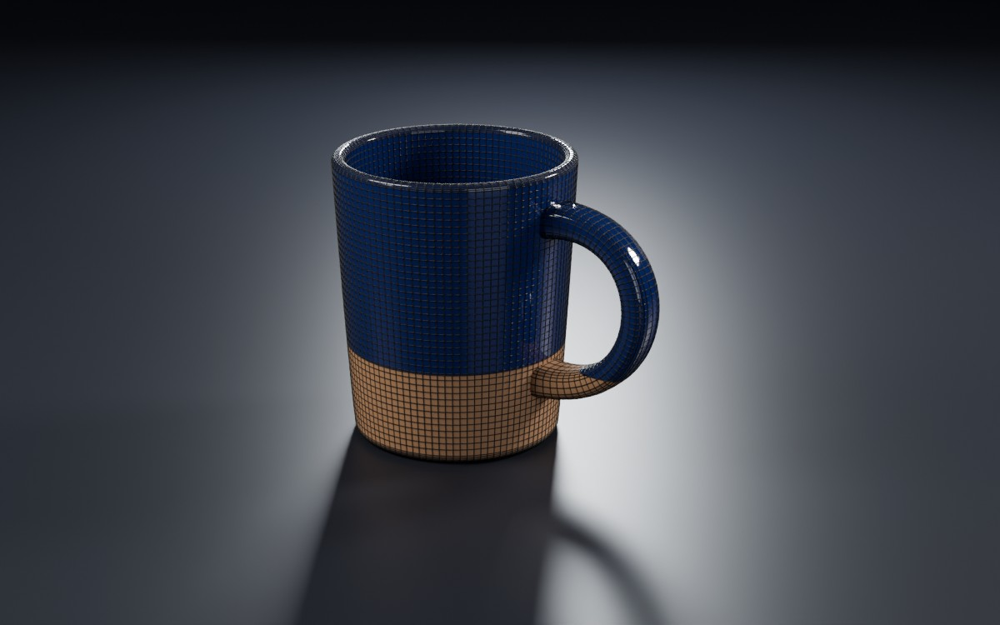
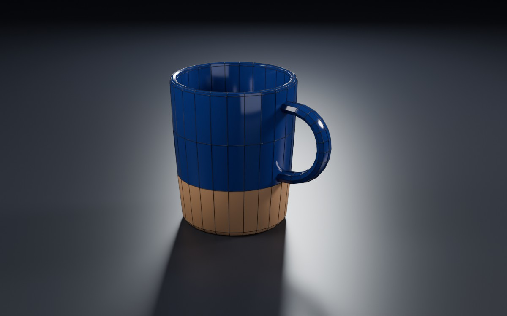

社内勉強会
AIによる3Dモデリングと
AI駆動開発
Claude Code と Blender MCP の実例と、
仕様駆動開発の進め方
今日の内容
今日お話しすること
- AIが3Dモデルを作るしくみ
- 指示の書き方で、結果がどう変わるか
- トークン消費量と、人の手間
- 仕様駆動開発の進め方
しくみ
AIが3Dモデルを作るしくみ
Python コードを書く
呼び出すための共通の規格
形を作る
AI駆動開発
AI駆動開発で変わる役割分担
| これまで | AI駆動開発 | |
|---|---|---|
| コードを書く | 人 | AI |
| 何を作るか決める | 人 | 人 |
| 結果を確かめる | 人 | AIも確認するが、最終確認は人 |
| 試作にかかる時間 | 数時間〜数日 | 数分。作り直しも容易 |
指示による違い
指示の書き方を変えて比べる
同じ Claude Code と Blender で、指示の文だけを変えてマグカップを作らせました。指示ごとに、何もない状態から新しい会話で始めています。
仕様として書く
直したい点を伝える
指示 A
指示Aを4回頼んだ結果
高さ約11cm

高さ約10cm・直径約9cm

高さ約10cm・直径約9cm
高さ約10cm・直径約9cm
指示に書いていない素材や形は、AIがその都度決めています。
指示 C
指示Cで、AIが書いたコード（抜粋）
H=0.095; RT=0.040; RB=0.034; WALL=0.004; FLOOR=0.006; SEG=96
def rout(z):
t=max(0,min(1,z/H)); return RB+(RT-RB)*(t**0.8)
prof=[] # (r,z,tag) tag: 'o' outer,'i' inner
...
# rim semicircle r=2mm (wall 4mm)
zc=H-0.002; rc=rout(zc)-0.002
for i in range(1,12):
a=math.pi*i/12
prof.append((rc+0.002*math.cos(a), zc+0.002*math.sin(a), ...))
...
bm=bmesh.new()
for r,z,t in prof:
rings.append([bm.verts.new((r*math.cos(2*math.pi*j/SEG),
r*math.sin(2*math.pi*j/SEG), z))
for j in range(SEG)])
...
# cut the glaze line at 1/3 height
zl=H/3
bmesh.ops.bisect_plane(bm, ..., plane_co=(0,0,zl), plane_no=(0,0,1))
指示Cを頼んだときに、Claude Code が書いて Blender で実行した Python コードの一部です（動画とは別の回のもの）。
- 寸法は変数で持っています（高さ
H=0.095、口の半径RT=0.040、壁の厚さWALL=0.004）。 - 断面の点の並び（
prof）を、円周方向にSEG=96分割して回し、本体を作っています。 - 高さの 1/3 で面を切り、上下で材質を分けています。
指示による違い
マグカップの結果の比較

素材・形・大きさはAIが決めた

素材と取っ手は指示どおり

寸法・形・色分けも指示どおり

頼んだ3点が反映された
指示による違い
別の題材：時計

指示Aでは時計の種類から、指示Bでは細部を、AIが決めています。
指示による違い
決まっていない点を、AIに質問させる
AIからの質問
- 種類（グラス、マグカップなど）
- 大きさ
- 材質と色
- 中身を入れるか
- 用途（ポリゴン数を抑えるか）
- 装飾
指示Cと同じ内容で答えると、寸法も色分けも指示Cと同じ仕上がりになりました。トークン消費量は約6.1万で、指示Cとほぼ同じです。

ちなみに
ちなみに：ポリゴン数は、AIが書くコードで決まる



同じ仕様でも、先に質問させて作ったときは 8,852 で、回によっても変わります。
トークン消費量
頼み方で変わるのは、人の手間
トークンは、AIが読み書きした文章量の単位です。料金や利用上限はトークン消費量で決まります。どれも、指示Cと同じ仕様のマグカップができるまでの量です。
| 頼み方 | トークン消費量 | ツールの呼び出し | 人が指示した回数 |
|---|---|---|---|
| ひとことで始めて、3回に分けて頼む | 6.2万 | 14回 | 3回 |
| 先に質問させる | 6.1万 | 6回 | 2回 |
| 仕様を書いて1回で頼む（指示C、2回試行） | 6.4万 ／ 5.7万 | 10回 ／ 4回 | 1回 |
| 指示C＋完成の基準（2回試行） | 5.5万 ／ 5.5万 | 3回 ／ 3回 | 1回 |
変わったのは人の手間です。仕様を書いて頼むと、結果を見て指示を出し直す回数が 3回から 1回に減りました。
トークン消費量
トークン消費量は、AIの作業量で増える
ツールを1回呼び出すたびに
- それまでのやり取りをすべて読む
- 次に実行するコードを書く
- 結果（文字や画像）を受け取る
受け取った結果はやり取りに加わるので、呼び出しを重ねるほど、毎回読む量が増えます。
作業をしなくても毎回かかる分
呼び出し1回あたりの増加（平均）
トークン消費量
トークン消費量を抑える方法
頼み直しを減らす
狙いと違う物ができて最初から頼み直すと、そのたびに約5万かかります。必要なことは最初の指示に書くか、先に質問させます。
直すときは同じ会話で頼む
今回は、1回の修正で +0.4〜0.6万でした。
別の作業は、新しい会話で始める
会話が長くなるほど、呼び出しのたびに読む量が増えます。前提はリポジトリのファイル（CLAUDE.md、copilot-instructions.md など）に書いておけば、新しい会話でも引き継げます。
完成の基準を書く
指示Cに「斜め上からの画像を1回見て、寸法と色分けが合っていれば完成」と足すと、2回とも約5.5万でした（足さない場合は 6.4万と 5.7万）。
使わないツールは読み込まない
ツールは、MCP でつないだソフトの操作機能のことです。作業をさせずに比べると、Blender のツール3つを読み込むだけで約4.3万から約4.9万に増えました。
※ 数字は今回 Claude Code が記録した値で、小さな作業での一例です。確認を減らすと誤りに気づきにくくなる点に注意が必要です。
トークン消費量
GitHub Copilot に置き換えると
GitHub Copilot の月額プランは、2026年6月から、使ったトークン量に応じて「AI Credits」が減る方式になりました。
クレジットの単位
1 クレジット ＝ 0.01ドル
Copilot Pro（月10ドル）には、月1,500クレジットが含まれます。
トークンの単価（例）
入力 100万トークン ＝ 2ドル
Claude Sonnet 5.5 の場合。出力は10ドル、キャッシュ済みの入力は0.10ドルです。
換算の目安
5万トークン ≒ 10クレジット
5万トークンを入力として1回読む場合です。出力が多いと増え、キャッシュが効くと減ります。
※ 2026年11月時点の GitHub のドキュメントによる。単価はモデルごとに異なり、プランの内容は変わることがあります。
指示の書き方
コードを書かせるときに、指示に書く項目
誰が使うか
データの形式
既存コードとの互換性
範囲
確認する手順
決めきれない点は、作る前にAIに質問させます。
仕様駆動開発
仕様駆動開発の進め方
1. 仕様をファイルに書く
前のページの5項目を、リポジトリの中の Markdown に書きます。
2. 実装の前に、計画と質問を出させる
変更するファイルと手順をAIに書かせ、不明点は質問させます。
3. テストを先に書かせる
受け入れ基準をテストにし、実装前に失敗することを確かめます。
4. 実装させ、テストとレビューで確かめる
テストが通ることを確認し、差分は人がレビューします。
5. 直すときは仕様から直す
仕様 → テスト → 実装の順に直し、仕様もコミットします。
# 注文CSVの取り込み 仕様 ## 目的 基幹システムが出力する注文CSVを、毎晩DBへ取り込む。 ## 入力 / 出力 - 入力: `orders_YYYYMMDD.csv`（UTF-8、ヘッダーあり） - 列: order_id, customer_id, amount, status, ordered_at - 出力: orders テーブルへ upsert し、結果（取り込んだ件数・スキップした件数）をログに出す - 呼び出し方: `python -m orders.import_csv <CSVのパス> <DBのパス>` ## 制約 - 10万行を5分以内で処理する - 既存の `OrderRepository` を使う。スキーマは変えない - 標準ライブラリのみ使う ## やらないこと - ほかのテーブルの更新 - `OrderRepository` の既存メソッドの挙動の変更 ## 受け入れ基準 - 不正な行はスキップし、行番号をログに出す - 同じファイルを2回流しても件数が変わらない - 上の2点を確認するテストが通る
実例で使った仕様（spec.md、人が書いた24行）
仕様駆動開発 ・ 実例
実例① 実装の前に、計画と質問を出させる
伝えたいこと：コードを書かせる前に質問させると、仕様の抜けが実装の前に見つかります。
1. 計画: 追加・変更するファイルと、作業の手順
2. 質問: 仕様で決まっていない点や、あいまいな点」
返ってきた計画
追加するのは orders/import_csv.py と tests/test_import_csv.py。既存の repository.py は変更しない。テストを先に書く。
返ってきた質問（10件から抜粋）
- 「不正な行」の定義は何か。amount の負の数や小数、status に許される値、日付の形式は。
- 同じ order_id がファイル内に2回出たら、どうするか。
- 途中で失敗したとき、そこまでの分は残すか。
- スキップした行があったとき、終了コードは何にするか。
- DB ファイルが無いときは、新しく作るか。
質問にはそれぞれ案が付いていて、人は「案のとおり」か、違う点だけを答えました。
仕様駆動開発 ・ 実例
実例② テストを先に書かせてから、実装させる
伝えたいこと：受け入れ基準をテストにしておくと、完成したかどうかを、AIの報告ではなくテストの結果で判断できます。
class AcceptanceTest(ImportCsvTestCase):
"""spec.md の受け入れ基準。"""
def test_invalid_rows_are_skipped_and_line_numbers_are_logged(self):
path = self.write_csv([
HEADER,
"A1,C1,100,paid,2026-11-01", # 2 行目
"A2,C2,abc,paid,2026-11-01", # 3 行目: amount が不正
"A3,C3,300,pending,2026-11-02", # 4 行目
"A4,,400,paid,2026-11-02", # 5 行目: customer_id が空
])
with self.assertLogs(LOGGER, level="INFO") as logs:
result = import_file(path, self.repo)
self.assertEqual(result.imported, 2)
self.assertEqual(result.skipped, 2)
...
self.assertIn("3 行目", warnings[0])
self.assertIn("5 行目", warnings[1])
左は、仕様の受け入れ基準「不正な行はスキップし、行番号をログに出す」を、Claude Code がテストにしたものです。
- テスト（319行）を先に書かせ、実行して失敗することを確認しました。実装がまだ無いので、失敗するのが正しい状態です。
- 実装（163行）のあと、29件のテストがすべて通りました。これで、受け入れ基準を満たしたと判断できます。
- 仕様の「制約」も確かめました。10万行は 0.65秒で、既存の
OrderRepositoryは変更されていません。
仕様駆動開発 ・ 実例
実例③ 仕様変更は、仕様から直す
伝えたいこと：仕様 → テスト → 実装の順に直すと、3つの内容がずれません。変更の影響も、実装の前に分かります。
Claude Code が報告した気づき
「一度 paid で入った注文は、基幹システム側でキャンセルされても、DB では元の状態のまま残ります。DB を見てもキャンセル済みかどうかは分かりません」
02cb347 初期状態: OrderRepository と仕様 2331740 仕様: 質問への回答で決まったことを spec.md に追記する 9f2196a テスト: 注文CSVの取り込みの受け入れ基準と検証ルールのテストを足す a289e31 実装: 注文CSVを orders テーブルへ取り込む orders.import_csv を足す d2af11f 仕様: status が cancelled の注文は取り込まず、対象外として数える d2a9151 テスト: cancelled の注文を対象外として数えるテストを足す cede1c5 実装: cancelled の注文を取り込まず、対象外として数える
実際のコミット履歴。仕様変更では、テストの時点で37件中10件が失敗し、実装のあと37件すべてが通りました。
Claude Code の作業時間は合計で約5分、トークン消費量は約8.2万でした。このあと、差分を人がレビューします。
今後の進め方
開発への取り入れ方
個人で試す
既存コードの説明、テストの下書き、小さな関数の実装を頼んでみます。
前提をファイルに残す
ビルドとテストのコマンド、コーディング規約を CLAUDE.md や copilot-instructions.md に書きます。
仕様から実装させる
小さな機能を、仕様 → 計画 → 実装 → テスト → プルリクエストの順で任せます。
チームで運用する
仕様のひな形、レビューの観点、CI での確認をチームでそろえます。
今後の進め方
AIに任せるときの注意点
AIは間違えることがあります
今回の作業でも、次のような誤りがありました。
- 取っ手の端がカップの内側に突き出ていた（指示A）
- 色の塗り分けが指定と違っていた（指示C）
どちらも Claude Code が画像を見て気づき、自分で直しました。ただし、気づかないまま残る誤りもあります。コードでも同じです。
守ること
- 差分は必ず人がレビューする
- テストと CI を通す
- ブランチで作業させ、元に戻せるようにしておく
- API キーや顧客データなどの秘密情報を入力しない
- 会社のルールに従う
まとめ
AI駆動開発では、人は「仕様を書くこと」と「結果を確かめること」に工数を使います。
- 指示に書かなかった点は、AIが決めます。作らせる前に仕様を書き、決まっていない点はAIに質問させます。
- 仕様を書いても、トークン消費量はほとんど変わりません。減るのは、人が指示を出し直す工数です。
- 完成したかどうかは、AIの報告ではなく、テストとレビューで判断します。